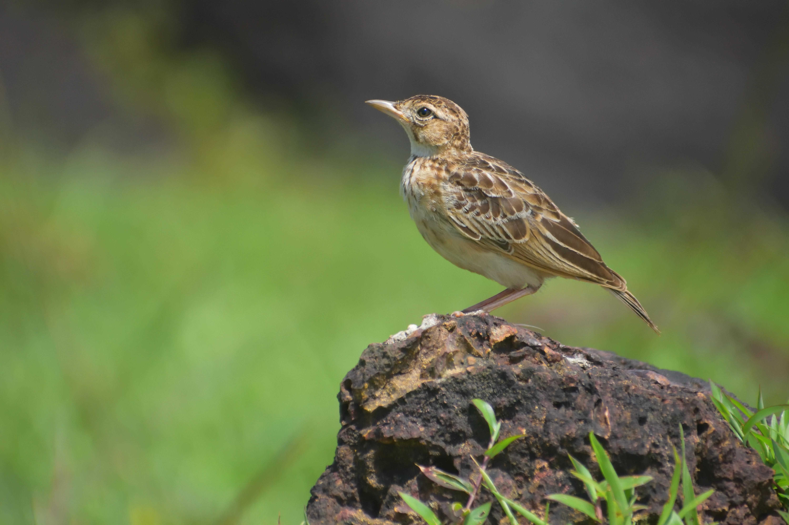

The Indian Bush Lark is a ground-dwelling lark of dry open country. Its brown, streaked plumage provides excellent camouflage among soil, grasses, and scrub. It spends much of its time on the ground feeding on seeds and insects, but males become especially conspicuous during the breeding season when they perform display flights and sing. It can be distinguished from similar brown larks by its compact appearance, relatively short tail, and preference for dry scrub and open ground.